Structure
The structure of the sympathetic division varies as compared to the parasympathetic division. The preganglionic neurons of the sympathetic division originate from the
thoracic and lumbar regions of the spinal cord, with most synapsing with postganglionic neurons at the sympathetic chain ganglia: regularly segmented interconnected ganglia that are located
lateral to the spine. However, some synapses occur at ganglia further away from the spine. This includes the celiac, superior mesenteric, and inferior mesenteric ganglia.
The cell bodies of the preganglionic sympathetic neurons originate from the gray matter of the spinal cord. More specifically, the lateral horn region of the thoracic and lumbar segments.
These neurons can take a number of paths towards their respective target organs. Above is a diagram that shows a preganglionic neuron exiting through a region of the spinal nerve called the ventral
root to synapse at a chain ganglion.